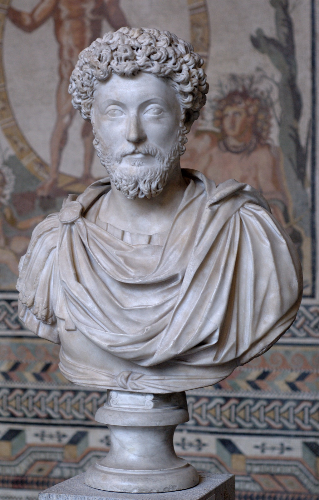

죽음을 생각하면 오늘 할 일이 보인다 — 스토아 철학자들의 하루 정리법
"지금 당장이라도 삶을 떠날 수 있다. 그러니 그에 맞추어 모든 행동과 생각을 정하라."
로마 황제 마르쿠스 아우렐리우스가 『명상록』 2권 11절에 적은 문장입니다[1]. 남에게 읽히려고 쓴 글이 아니었습니다. 『명상록』은 그가 그리스어로 스스로에게 적어 둔 메모 열두 권이고, 그 일부는 원정길에서 쓰였습니다[2]. 1권 끝에는 "그라누아 강가, 콰디족의 땅에서", 2권 끝에는 "카르눈툼에서"라는 짧은 메모가 붙어 있습니다. 카르눈툼은 도나우강 남쪽 기슭의 도시였습니다[1].

국경에서 하루를 보내던 사람이 왜 자기 죽음부터 적었을까요. '메멘토 모리', 곧 "죽음을 기억하라"는 말을 들으면 흔히 해골 그림과 어두운 얼굴을 떠올립니다. 날마다 죽음을 생각하면 삶이 가라앉을 것 같습니다. 그런데 위 문장의 뒷부분을 다시 보면, 눈길은 죽음에 머물지 않습니다. 곧바로 '행동과 생각을 정하는 일'로 넘어갑니다.
스토아 철학자들이 날마다 죽음을 떠올린 것은 삶을 어둡게 하려던 것이 아니라, 오늘 할 일의 순서를 정하려던 것이었습니다.
이 글은 "죽음을 기억하라"는 말이 어딘가 음울하게 들렸던 분들을 위해 씁니다. 세네카, 에픽테토스, 마르쿠스 아우렐리우스 세 사람의 글에서 그 연습이 실제로 어떻게 적혀 있는지 차례로 읽고, 이 말의 내력과 현대 심리학이 확인한 것, 확인하지 못한 것까지 짚겠습니다. 이야기의 중심은 스토아 철학의 죽음 명상, 흔히 메멘토 모리(memento mori)라 부르는 연습입니다.
세네카 — 죽음은 앞이 아니라 뒤에 있다
세네카는 기원전 4년 무렵에 태어나 기원후 65년에 죽은 로마의 정치가이자 철학자입니다[3]. 그가 49년 무렵 쓴 것으로 보는 『삶의 짧음에 대하여』는 사람들의 오랜 불평에서 시작합니다. 삶이 너무 짧다는 불평입니다. 세네카의 대답은 첫 장에 나옵니다[4].
우리가 받은 삶이 짧은 것이 아니라 우리가 삶을 짧게 만든다. 삶이 모자란 것이 아니라 우리가 삶을 헤프게 쓴다.
— 세네카, 『삶의 짧음에 대하여』 1장 (영역본에서 옮김)[4]
3장에서 그는 더 날을 세웁니다. 사람들은 땅의 경계를 두고는 돌과 무기를 들면서, 자기 삶에는 아무나 드나들게 둡니다. 돈은 움켜쥐면서 시간은 흘려보냅니다. 까닭은 한 가지입니다. "영원히 살 것처럼" 살기 때문입니다. 쉰 살이 되면 쉬겠다, 예순이 되면 공직을 내려놓겠다고 말하는 사람들에게 그는 묻습니다. 살기를 그쳐야 할 때에야 살기 시작한다면 얼마나 늦은 일이냐고요. 7장에서는 흰머리와 주름이 있다고 오래 산 것이 아니라고 말합니다. 그 사람은 오래 산 것이 아니라 오래 있었을 뿐이라는 것입니다[4].
말년의 세네카는 이 생각을 한 걸음 더 밀고 갑니다. 그는 62년 봄 무렵 공직에서 물러났고, 죽기 전 두세 해 동안 친구 루킬리우스에게 편지를 썼습니다. 지금 124통이 전합니다[5]. 그 첫 편지에 이런 대목이 있습니다. 우리는 죽음을 앞에 놓인 것으로 내다보지만 그것은 착각이고, 죽음의 큰 몫은 이미 지나갔으며, 지나간 세월은 모두 죽음의 손에 있다는 것입니다[6].
죽음이 멀리 있는 한 점이라면 겁내거나 잊는 것 말고는 할 일이 없습니다. 죽음이 날마다 조금씩 가져가는 몫이라면 할 일이 생깁니다. 세네카는 같은 편지에서 바로 그 일을 말합니다. 오늘의 일을 붙잡아라, 그러면 내일에 덜 기대게 된다, 미루는 동안 삶은 달려간다[6].
101번 편지에는 이 생각을 굳힌 사건이 적혀 있습니다. 코르넬리우스 세네키오라는 기사가 있었습니다. 검소하게 살며 몸과 재산을 꼼꼼히 돌보던 사람입니다. 그날도 여느 때처럼 아침 일찍 세네카를 찾아왔고, 해 질 녘까지 위독한 친구의 머리맡을 지켰습니다. 기분 좋게 저녁을 먹은 뒤 갑자기 목이 붓는 급성 병에 걸렸고, 날이 밝을 때까지 겨우 버티다 숨졌습니다. 세네카는 이렇게 맺습니다. 우리는 먼 항해와 승진을 계획하지만 죽음은 내내 곁에 서 있다, 그러니 아무것도 미루지 말고 날마다 삶의 장부를 맞추자, 날마다 삶에 마지막 손질을 해 두는 사람은 시간이 모자라지 않다[6].
그렇다고 하루하루를 벼랑 끝처럼 살라는 말은 아닙니다. 61번 편지에서 그는 선을 긋습니다. 하루를 마지막 날인 양 움켜쥐는 것이 아니라, 마지막 날일 수도 있다고 여길 뿐이라고요. 12번 편지에서는 잠자리에 들며 "나는 살았다"고 말할 수 있는 사람에게 아침은 날마다 덤으로 온다고 썼습니다[6].
에픽테토스 — 입 맞추는 순간에 떠올리라
에픽테토스는 50년 무렵 노예로 태어나 해방된 뒤 철학을 가르쳤고, 135년 무렵 그리스 서북부 니코폴리스에서 죽었습니다. 글은 남기지 않았습니다. 108년 무렵 그에게 배운 제자 아리아노스가 강의를 받아 적은 『담화록』과, 그 요약인 『엥케이리디온』(편람)이 전할 뿐입니다[7].
『엥케이리디온』 3절은 서늘합니다. 아끼는 것이 있으면 가장 하찮은 것부터 "이것은 무엇인가"를 스스로에게 말하라고 합니다. 항아리를 아낀다면 "나는 항아리를 아낀다"고 말합니다. 아이나 아내에게 입 맞출 때는 "나는 사람에게 입 맞추고 있다"고 말합니다. 그러면 잃더라도 흔들리지 않는다는 것입니다[8].
차갑게 들리는 이 지시의 속뜻은 『담화록』 3권 24장에 풀려 있습니다. 사랑하는 사람은 내 소유가 아니라 "지금을 위해" 주어진 것이고, 무화과나 포도송이처럼 정해진 철에 주어진 것이라고 그는 말합니다. 겨울에 무화과를 찾는 사람은 어리석습니다. 듣던 이가 "불길한 말"이라고 맞서자, 에픽테토스는 이삭을 거두는 일도 이삭에게는 끝이지만 불길하다고 하지 않는다고 되받습니다[8]. 그가 말하는 것은 사랑이 아니라 '영원히 내 것'이라는 착각이었습니다.
21절은 이 연습이 무엇에 쓰이는지를 한 문장으로 말합니다.
죽음과 추방, 그리고 두려워 보이는 모든 것을 날마다 눈앞에 두라. 그 가운데서도 죽음을. 그러면 비천한 생각을 품지 않고, 무엇도 지나치게 바라지 않게 된다.
— 에픽테토스, 『엥케이리디온』 21절 (영역본에서 옮김)[8]
여기서도 죽음은 목적지가 아니라 저울추입니다. 죽음을 한쪽에 올려놓으면 무엇이 하찮고 무엇이 지나친 욕심인지 눈금이 드러납니다.
'메멘토 모리'라는 말은 어디서 왔나
에픽테토스는 『담화록』 3권 24장에서 인상적인 비유를 씁니다. 입 맞출 때 스스로를 일깨우기를, "개선식에서 장군 뒤에 서서 그가 죽을 존재임을 일깨우는 이들처럼" 하라는 것입니다[8]. 로마의 개선장군 뒤에서 노예가 "메멘토 모리"라고 속삭였다는 이야기는 여기저기서 되풀이됩니다. 확인되는 만큼만 적어 보겠습니다.
가장 자주 인용되는 문장은 기독교 저술가 테르툴리아누스가 197년 무렵 쓴 것으로 보는 『호교론』 33장에 있습니다[9]. 개선 전차에 앉은 황제의 등 뒤에서 한 목소리가 "뒤를 돌아보라, 네가 사람임을 기억하라"고 속삭인다는 대목입니다[10]. 두 가지가 눈에 띕니다. 문장에 '죽음(mori)'이라는 낱말이 없습니다. 그리고 그 목소리의 주인이 노예라는 말도 없습니다.
고전학자 메리 비어드는 2007년 책 『로마의 개선식』에서 이 장면을 따져 물었습니다. 이 책을 다룬 서평에 따르면 비어드의 결론은 이렇습니다. 장군 뒤에 섰다는 인물의 묘사는 문헌과 그림마다 크게 다르고, 그가 했다는 말은 사실상 근대에 짜 맞춘 것이며, 실제 의례에서 그가 무슨 역할을 했는지는 판단할 수 없습니다[11]. 에픽테토스가 설명 없이 비유로 쓴 것을 보면 당시 사람들에게 낯선 이야기는 아니었던 듯합니다. 그래도 흔히 전하는 그 장면에 대한 사료는 얇습니다.
'메멘토 모리'라는 두 낱말 자체는 문법으로 풀면 간단합니다. 메멘토(memento)는 '기억하다'를 뜻하는 동사의 2인칭 단수 명령형이고, 모리(mori)는 '죽다'의 부정사입니다. 이 표현은 기독교가 자라나면서 함께 퍼졌고, 중세부터 묘비 미술과 건축에 나타났습니다[12]. 이 글에서 읽은 세네카와 에픽테토스와 마르쿠스의 대목 어디에도 이 두 낱말은 나오지 않습니다. 세네카는 26번 편지에서 "죽음을 생각하라"는 말을 옮겨 적는데, 그 출처로 밝힌 사람은 뜻밖에도 다른 학파의 에피쿠로스입니다. 세네카는 거기에 한 줄을 보탭니다. 죽는 법을 배운 사람은 노예로 사는 법을 잊은 사람이라고요[6].
마르쿠스 — 순서를 정하는 문장들
다시 황제에게 돌아가 봅니다. 마르쿠스 아우렐리우스는 161년부터 180년까지 로마를 다스렸습니다. 『명상록』의 많은 부분은 그가 원정을 지휘하던 170~180년에 쓰였을 가능성이 있습니다[2]. 이 메모에서 죽음은 자주 나오지만, 문장은 거의 언제나 같은 꼴로 끝납니다. '그러니 지금 이렇게 하라'입니다.
2권 5절은 모든 행위를 생의 마지막 행위처럼 하라고 말한 뒤, 무엇을 내려놓을지 꼽습니다. 부주의와 위선, 자기 몫에 대한 불만 같은 것들입니다. 4권 17절은 더 짧습니다. 만 년을 살 것처럼 굴지 마라, 죽음이 네 위에 걸려 있다, 살아 있는 동안, 할 수 있는 동안 선한 사람이 되어라. 7권 69절은 품성의 완성을 이렇게 정의합니다. 하루하루를 마지막 날처럼 보내되, 들뜨지도 무기력하지도 꾸미지도 않는 것[1].
'들뜨지 않는다'는 단서를 눈여겨볼 만합니다. 마지막 날처럼 산다는 말은 흔히 하고 싶은 것을 다 해 보라는 권유로 보일 수도 있습니다. 허나, 마르쿠스의 문장은 정반대입니다. 덜어 내라는 것입니다. 마지막 날이라면 하지 않을 일을 오늘 목록에서 지우라는 것입니다.
죽음은 감정의 크기를 재는 자로도 쓰입니다. 7권 22절에서 그는 잘못한 사람까지 사랑하는 것이 사람다운 일이라고 적고, 그 이유를 꼽습니다. 그들도 동족이고, 몰라서 저지른 일이며, "머지않아 둘 다 죽는다"는 것입니다[1]. 상대도 나도 곧 사라질 존재라는 사실 앞에서, 화낼 일의 목록이 짧아집니다.
그렇다고 그가 죽음을 깔보라고 한 것도 아닙니다. 9권 3절에서 죽음은 젊고 늙는 일, 이가 나고 수염이 나고 머리가 세는 일, 아이를 배고 낳는 일과 나란히 놓입니다. 자연이 하는 일 가운데 하나라는 것입니다. 그래서 죽음을 무심하게도, 조급하게도, 얕잡아 보지도 말고 기다리라고 적습니다[1].
흔한 오해 — 스토아는 감정을 지우라고 했나
영어 낱말 '스토익(stoic)'은 고통이나 괴로움을 겉으로 드러내지 않는다는 뜻으로 쓰입니다[13]. 그래서 스토아 철학자가 죽음을 날마다 떠올렸다고 하면, 슬픔조차 느끼지 않으려는 훈련으로 짐작하기 쉽습니다. 글은 다르게 말합니다.
세네카는 친구 플라쿠스를 잃은 루킬리우스에게 63번 편지를 씁니다. 친구를 잃었을 때 눈이 말라 있어서도 안 되고 넘쳐흘러서도 안 된다, 울어도 좋지만 통곡하지는 말라는 것입니다. 9번 편지에서는 다른 학파와 선을 긋습니다. 우리의 현자는 괴로움을 느끼되 이겨 내고, 저들의 현자는 느끼지도 않는다고요[6]. 에픽테토스도 『담화록』 3권 2장에서 "나는 조각상처럼 무감각해서는 안 된다"고 말합니다. 아들로서, 형제로서, 아버지로서, 시민으로서 맺은 관계를 지켜야 한다는 것입니다[8].
스탠퍼드 철학 백과의 '스토아주의' 항목도 같은 점을 짚습니다. 격정에서 벗어난 현자라는 이상은 모든 감정을 뿌리 뽑으라는 말처럼 보이지만, 스토아 철학에는 현자가 누리는 '좋은 감정(에우파테이아, eupatheiai)'에 대한 설명이 따로 있고, 이것이 현자를 감정 없는 로봇으로 그리는 희화화를 뒤집는다는 것입니다[14]. 그들이 덜어 내려던 것은 감정 전체가 아니라, 그릇된 판단에서 나오는 격정이었습니다.
63번 편지에는 이 글의 주제와 곧장 이어지는 문장도 있습니다. 친구를 탐욕스럽게 누리자, 이 특권이 언제까지 우리 것일지 모르니[6]. 죽음을 떠올리는 일이 정을 줄이는 쪽이 아니라, 정을 미루지 않는 쪽으로 쓰이고 있습니다.
필자 한마디
죽음을 생각하는 일이 꺼림칙하게 느껴진다면 그것은 자연스러운 반응입니다. 에픽테토스의 강의를 듣던 사람도 "불길한 말"이라며 맞섰으니까요.
"죽음을 기억하라는 말의 무게는 '죽음'이 아니라 '그러니 오늘'에 실려 있습니다." 세네카는 장부를 닫자고 했고, 에픽테토스는 욕심의 눈금을 맞추자고 했고, 마르쿠스는 하지 않아도 될 일을 지우자고 했습니다. 세 사람 모두 죽음을 오래 들여다보지 않았습니다. "혹시 삶에 떠밀려 인생에서 추구해야 할 단 한가지 미션을 놓치고 계시지는 않습니까?"
참고문헌
- Marcus Aurelius Antoninus. The Thoughts of the Emperor Marcus Aurelius Antoninus (George Long 영역, 초판 1862; 2권 5·11절, 4권 17절, 7권 22·69절, 9권 3절과 1·2권 끝의 메모 및 역주). Wikisource. 링크 ↩
- 위키백과. Meditations (백과; 그리스어로 쓴 개인 메모 열두 권, 원정 중 집필, 재위 161~180년). 링크 ↩
- 위키백과. Seneca the Younger (백과; 생몰년, 65년 피소 음모와 네로의 명령). 링크 ↩
- Seneca. On the Shortness of Life (John W. Basore 영역, Loeb Classical Library, 1932; 1·3·7장, 집필 연대는 역주). Wikisource. 링크 ↩
- 위키백과. Epistulae Morales ad Lucilium (백과; 124통, 말년 두세 해에 집필, 62년 봄 무렵 은퇴). 링크 ↩
- Seneca. Moral Letters to Lucilius (Richard M. Gummere 영역, Loeb Classical Library, 1917~1925; 편지 1·9·12·24·26·61·63·70·101번). Wikisource. 링크 ↩
- 위키백과. Epictetus (백과; 생몰년, 니코폴리스, 아리아노스의 기록). 링크 ↩
- Epictetus. The Discourses as reported by Arrian, the Manual, and Fragments (W. A. Oldfather 영역, Loeb Classical Library, 1925~1928; 『엥케이리디온』 3·21절, 『담화록』 3권 2장·24장). Wikisource. 링크 ↩
- 위키백과. Apologeticus (백과; 197년 여름이나 가을 카르타고에서 집필한 것으로 보나 연대에 이견 있음). 링크 ↩
- Tertullian. Apology, 33장 (S. Thelwall 영역, Ante-Nicene Fathers 3권, 1885). New Advent. 링크 ↩
- Groll, F. Beard, The Roman Triumph 서평. ABC of War: Annotated Bibliography of Cultures of War, 마인츠 요하네스 구텐베르크 대학 (해설 서평; 대상 도서는 Beard, M. The Roman Triumph, 2007). 링크 ↩
- 위키백과. Memento mori (백과; 문법 풀이, 기독교와 함께 발달, 중세 이후 묘비 미술). 링크 ↩
- Wiktionary. stoic (사전; 형용사 뜻풀이 "고통이나 괴로움의 영향을 겉으로 드러내지 않는"). 링크 ↩
- Durand, M., Shogry, S., Baltzly, D. Stoicism. Stanford Encyclopedia of Philosophy, 2023. 링크 ↩